Manual de carruseles
Un mismo sistema, un armado distinto en cada slide. Cómo se piensa, cómo se arma y qué combinar para que ningún carrusel se parezca al anterior.
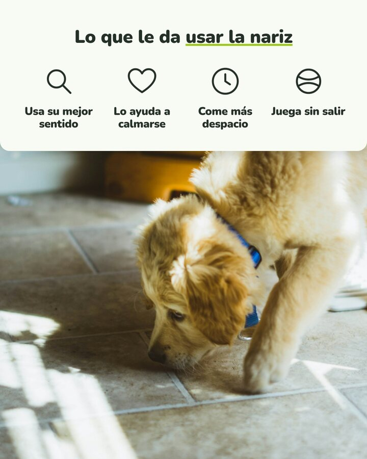
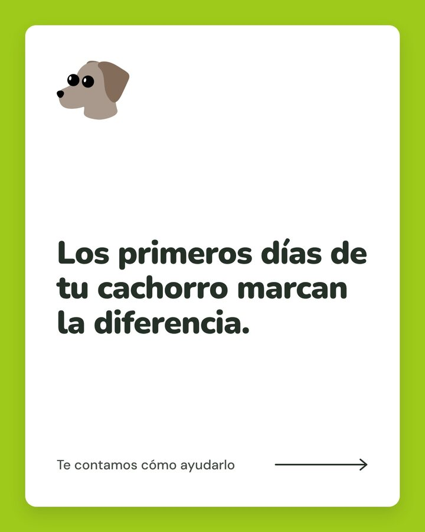
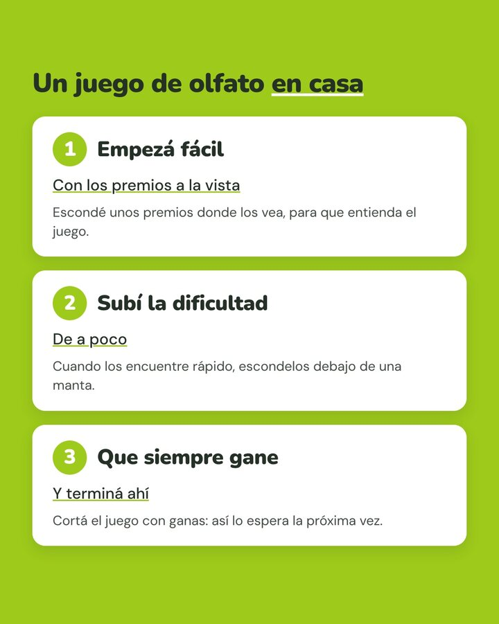
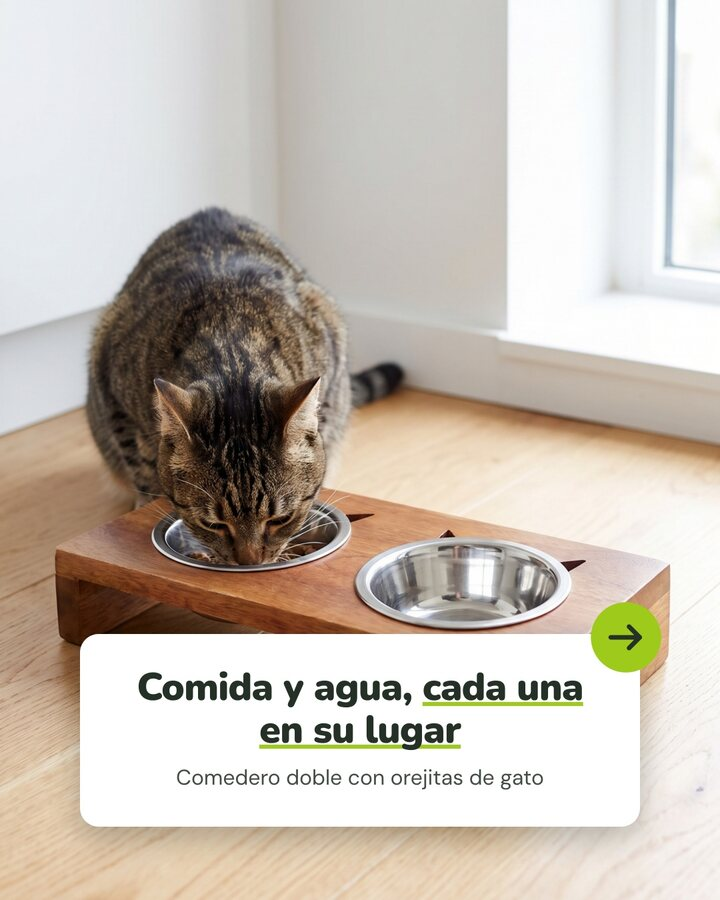
@seranimal · Ser Animal StudioComplemento de la Guía de Instagram · 2026
01 · Por qué un manual nuevo
Las portadas variaban. Adentro, todo igual.
Mirando cómo arma Petz sus carruseles, apareció el problema: cambiábamos la portada, pero por dentro repetíamos siempre la misma slide (foto en tarjeta, número, título y texto). Este manual ordena la solución.
AntesCinco slides, el mismo armado tres veces seguidas.
AhoraCinco slides, cinco armados distintos, con las mismas piezas de marca.
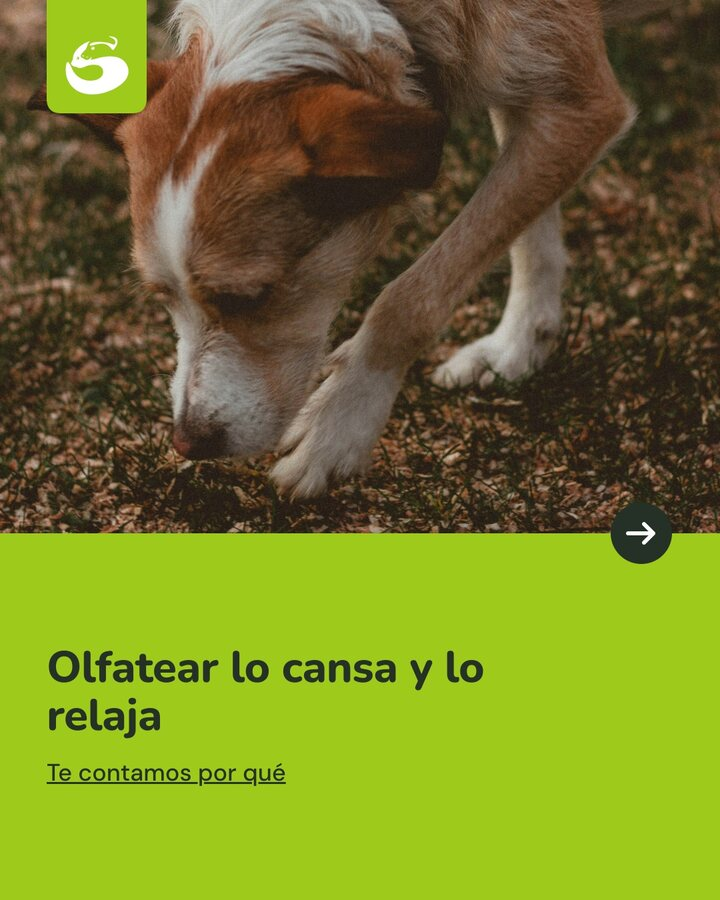
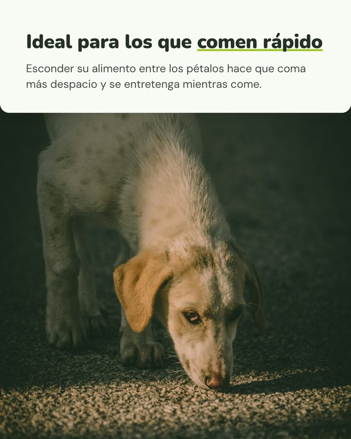
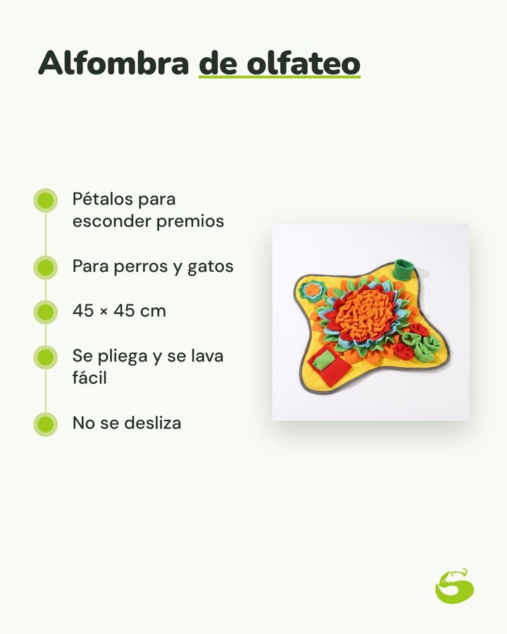
Lo que no cambia
Tipografías, verdes, subrayado, tarjetas redondeadas, íconos, personajes y flechas. Así se reconoce que es Ser Animal.
Lo que cambia
Cómo se combinan esas piezas en cada slide: panel con foto, íconos, tarjetas, lista, foto redondeada, ficha.
El resultado
Cada deslizada sorprende un poco. Se lee mejor, se guarda más y el feed deja de verse repetido.
 Manual de carruseles · Ser Animal2
Manual de carruseles · Ser Animal202 · La lógica
Seis reglas para armar cualquier carrusel
Se aplican junto con las reglas de oro de la Guía de Instagram: sin etiquetas, sin precios, sin marcas, sin WhatsApp en la imagen y siempre en positivo.
1
Un sistema, muchos armados
Las piezas son siempre las mismas. Lo que cambia es la combinación en cada slide.
2
Una idea por slide, cada una distinta
Nunca dos slides seguidas con el mismo armado. El «dato con foto», como mucho dos veces por carrusel.
3
El arco
Gancho (foto o frase) → valor (1 a 3 slides que enseñan algo) → solución (el producto, si lo hay) → pregunta, que va en el texto del posteo o en el cierre.
4
Fondos con ritmo
Foto, verde o blanco, alternados. El verde claro y el crema van solo en tarjetas, pastillas, líneas y detalles.
5
La flecha, dentro del diseño
En la portada, una sola indicación para deslizar: el «Deslizá», la flecha en círculo o la flecha fina con una frase. Se alternan entre posts.
6
Títulos cortos y subrayados
Nunito con 1 a 3 palabras clave subrayadas en verde, bajada en DM Sans. Textos de una o dos oraciones: el carrusel se lee de un vistazo.
Manual de carruseles · Ser Animal3
03 · Las piezas
El kit que se repite siempre
Todo sale de marca/elementos/ y de las plantillas del Studio: no se dibuja nada a mano.
Títulos
Un juego de olfato en casa
Nunito 900. Las palabras clave, subrayadas en verde (sobre verde, en blanco).
Tarjeta
1Empezá fácil
Con los premios a la vista
Blanca, bordes de 28 px y sombra suave. Con número en insignia verde.
Flechas
Una sola por portada. Se alternan entre posts.
Íconos de línea (nuevos)
Para las filas de beneficios. En el Studio se escriben «icono: etiqueta».
gota
hoja
corazon
pata
reloj
casa
sol
luna
lupa
pelota
plato
escudo
Personajes de especie

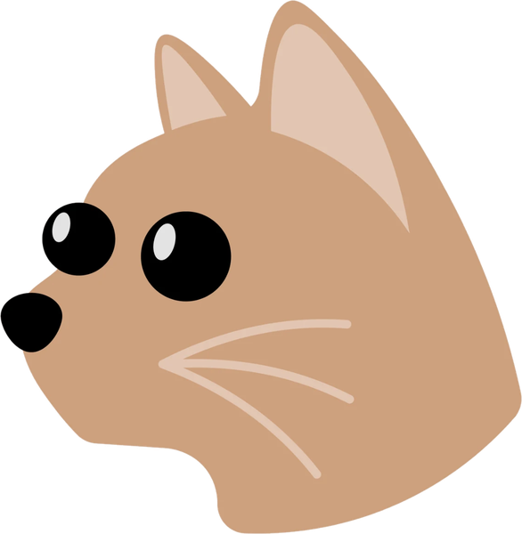
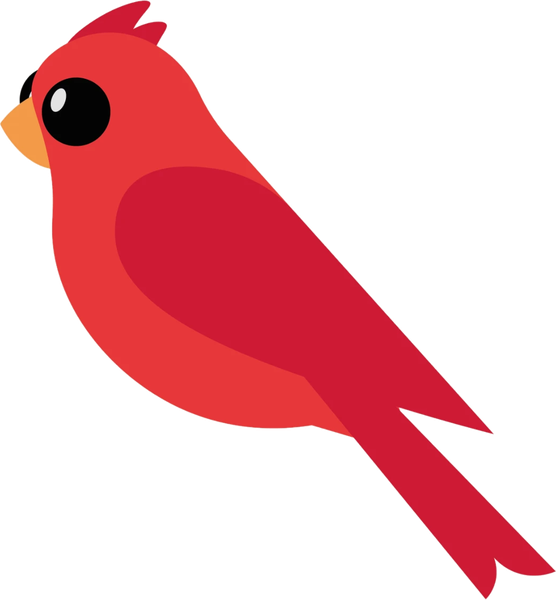
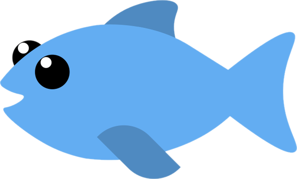
Se asoman en los globos, en la portada de solo texto y en el texto editorial. Siempre enteros.
Fondos
Verde
Blanco
Verde clarodetalles
Foto, verde o blanco, alternados. El verde claro, en líneas y pastillas.
Manual de carruseles · Ser Animal4
05 · Armados de adentro
Para contar una idea
Cada armado tiene su trabajo. Entre paréntesis, el nombre del tipo en Ser Animal Studio.
Panel y foto nuevo
Una idea con su explicación arriba y una foto grande abajo. El más versátil.
panel-foto · título + párrafo + foto. Número opcional.
Fila de íconos y foto nuevo
3 o 4 beneficios de un vistazo. Ideal antes de presentar un producto.
iconos-foto · un renglón por ícono: «gota: Más agua».
Tarjetas apiladas nuevo
2 o 3 pasos o consejos cortos en una misma slide, sin foto.
tarjetas · bloques separados por una línea en blanco: título, bajada, párrafo.
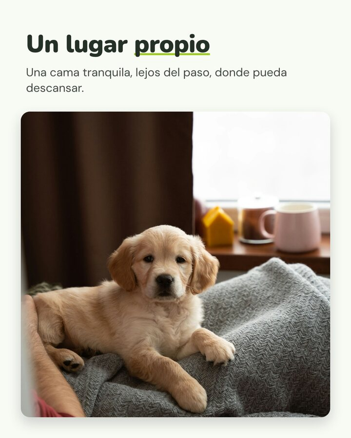
Título y foto redondeada nuevo
Una idea emotiva o simple, con la foto protagonista.
marco-redondo · título + bajada + foto.
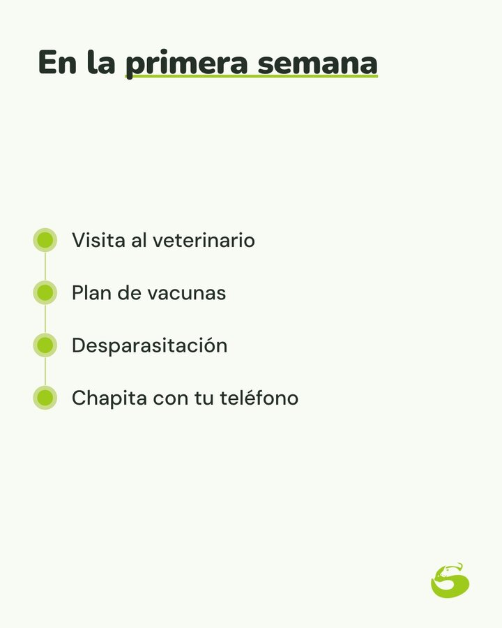
Lista con línea nuevo
Pasos, checklist o datos de un producto, unidos por una línea.
lista-linea · un punto por renglón, hasta 6. Foto de producto opcional.
Lista con producto nuevo
El producto como solución, con sus datos de la ficha. Alternativa a la ficha clásica.
lista-linea + foto del producto sobre blanco.
Manual de carruseles · Ser Animal6
05 · Armados de adentro
Los de siempre, con medida
Siguen siendo útiles, pero ya no se repiten seguidos.
Dato con foto
Una idea con foto en tarjeta y su número. Como mucho dos por carrusel, nunca seguidos.
dato · número + título + texto + foto.
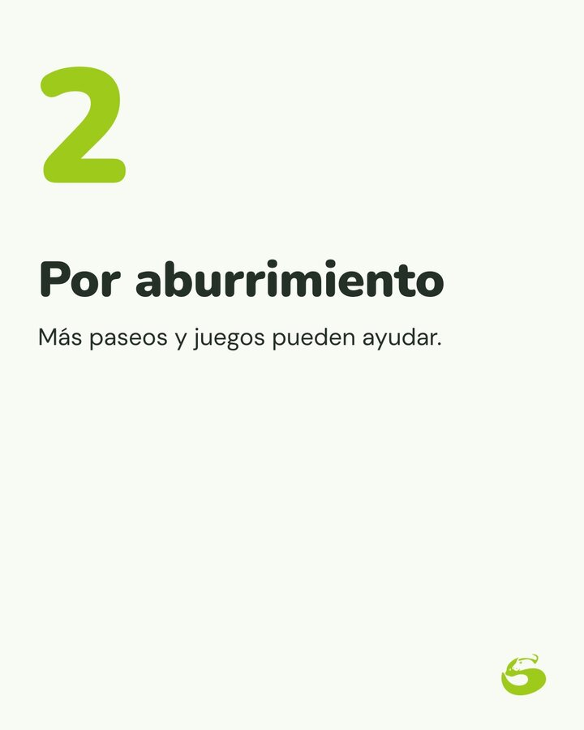
Número grande, solo texto
Para una idea que no necesita foto, o para cerrar una lista.
texto · número + título + texto.

Ficha de producto
Foto sobre blanco, nombre por lo que es, una línea y datos en pastillas. Sin precio.
producto-ficha · 1.er renglón descripción, después los datos.

Texto editorial
Una frase fuerte con palabras subrayadas, como pausa en el medio del carrusel.
texto-editorial · título con *asteriscos*.
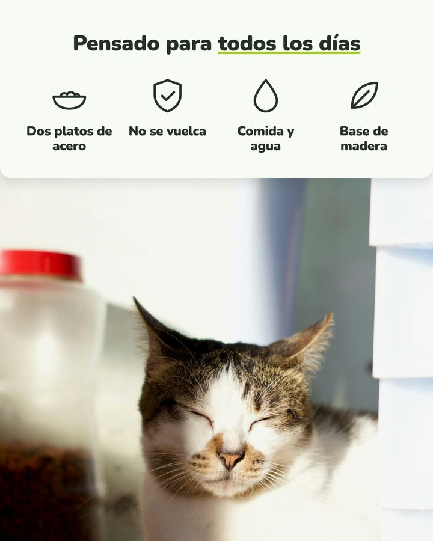
Íconos después de la ficha
En los posts de producto, una tercera slide que muestra el producto en la vida real con sus beneficios.
iconos-foto con una foto real.

Cierre
Una pregunta para comentar. Opcional: la pregunta también puede ir solo en el texto del posteo.
cierre · pregunta + frase corta.
Manual de carruseles · Ser Animal7
06 · Recetas
Combinaciones que funcionan
Puntos de partida para cada pilar. Se pueden cambiar, siempre que dos slides seguidas no repitan armado.
Consejo que termina en producto5 slides
Foto con panel→Íconos→Tarjetas→Panel y foto→Lista con producto o ficha
Consejos6 slides
Solo texto→Foto redondeada→Tarjetas→Íconos→Panel y foto→Lista
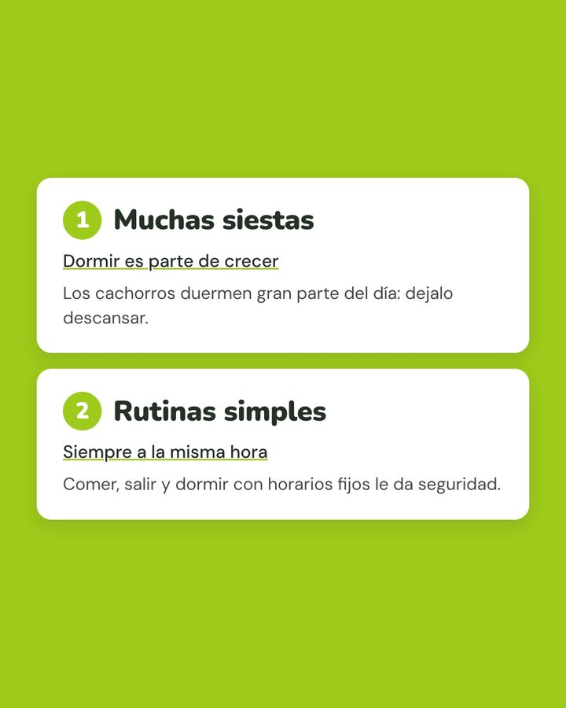
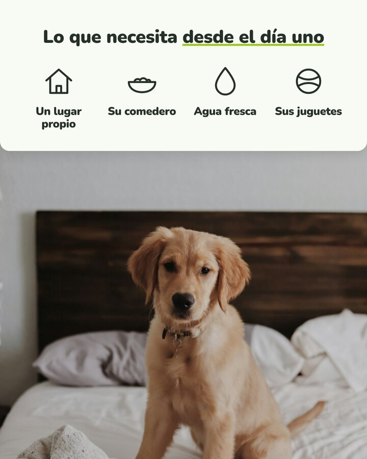
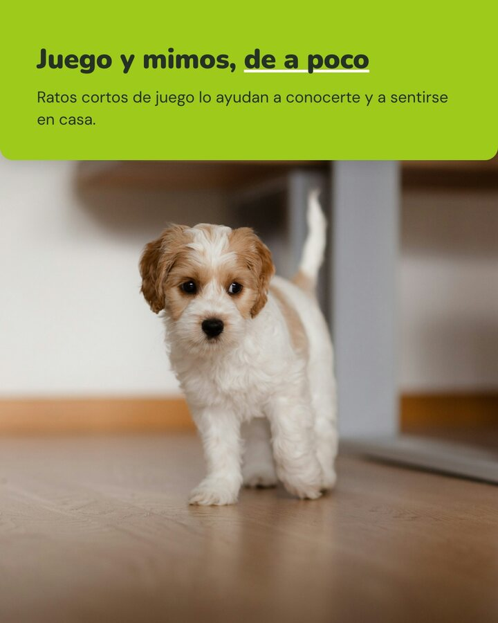
Producto3 slides
Foto con tarjeta o producto en uso→Ficha→Íconos con foto real
Manual de carruseles · Ser Animal8
06 · Recetas
¿Sabías que…?
Número grande→Dato→Panel y foto→Tarjetas→Cierre
O empezar con «Solo texto» cuando el dato sorprende por sí solo.
La familia Ser Animal
Cita sobre foto→Título abajo→Foto redondeada→Cierre
Fotos de personas con sus mascotas. La pregunta invita a contar su historia.
Guía o lista
Mosaico→Lista→Panel y foto→Tarjetas
Para «Qué llevar de viaje», «Antes de la primera semana» o «Qué revisar en verano».
Temporada
Título arriba→Íconos→Dato→Lista
Calor, pirotecnia, viajes: lo urgente arriba, la lista para guardar al final.
Antes de dar por terminado un carrusel
- No hay dos slides seguidas con el mismo armado.
- El «dato con foto» aparece como mucho dos veces.
- Sigue el arco: gancho, valor, solución, pregunta.
- Los fondos alternan foto, verde y blanco.
- Hay una sola indicación para deslizar en la portada.
- Cada slide se entiende sola, con una idea.
- Los íconos y elementos salen de la biblioteca de marca.
- Ningún texto ni elemento tapa caras.
- No hay etiquetas, precios, marcas ni WhatsApp en las imágenes.
- El texto del posteo cierra con la pregunta o la invitación a guardar.
Dónde está
Los armados nuevos ya están en Ser Animal Studio (studio/src/SlideView.tsx) y en las reglas que usa la IA para proponer carruseles. Los íconos, en marca/elementos/. El paso a paso, en la skill ser-animal-posts.
Manual de carruseles · Ser Animal9
Un mismo sistema, un armado distinto en cada slide.
@seranimal en Instagram, Facebook y TikTok · seranimal.com.uy